来源：https://mcnuw68f9l2p.feishu.cn/docx/H2ntdwDxGoMkLax2KhCcxzf7n14
我上周一上架了个叫「小猫补光灯」的App，这款App的功能其实很简单，就是能够将手机屏幕设置为不同颜色的补光色卡，帮助女生在拍照的时候能获得更好的效果。它的功能简单到我作为一个不会写代码非工程师出身的人，用Cursor只花了1小时就写完了代码，在第二天就被AppStore审核通过上线了。
在App上线后，我在小红书分享了这款产品，其中一条笔记获得了118万的阅读，7.3万的赞，并获得了超3万的App下载。
「小猫补光灯」在最高时甚至上到了AppStore分类排行榜的第20名，当是排在它前面几位的应用分别是YouTube、Instagram、Canva等。
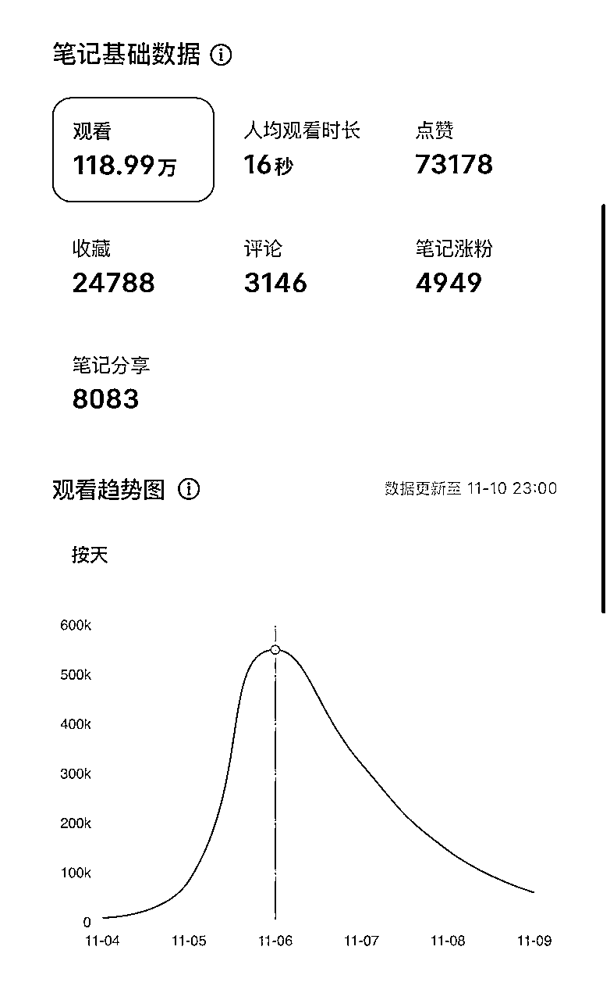
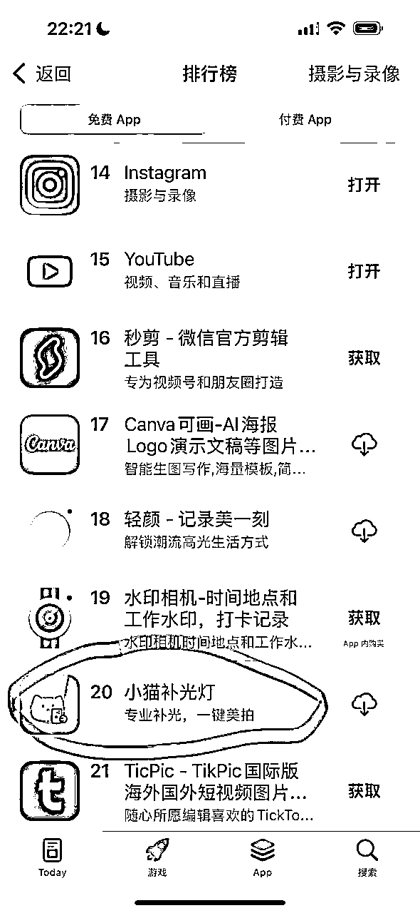
接下来详细聊聊这次事件的经历，尤其是我是如何发现这个需求，以及我对这次能在小红书爆火的理解。
首先我需要申明的是，这完全不是一个我预先策划并且能明确预设结果的营销事件， 中间有相当多的偶然和运气成分，但是我的一些经验和做事的风格可能刺激了这次运气在我身上发生。
做这款app的缘起是因为我要在YouTube发个Cursor教学视频，在这期视频里我想给观众传达「先完成再完美，要尽快发布自己的产品」的观点，视频链接：https://www.youtube.com/watch?v=1wLcjd13N0g
在这期视频中为了表达现在Cursor真的让产品开发很简单，而且普通人都能实现开发的理念。我告诉粉丝如果现在想开发产品，但是不知道做什么的话，可以从社交平台如小红书、reddit等找用户需求。当天reddit ChatGPT板块有个爆火的帖子是作者花了4个小时就用ChatGPT制作了一款可以调节屏幕亮度和冷暖色调的手机屏幕手电筒网站，于是我就给观众实操演示怎么快速用Cursor制作这个网站，以及进一步制作iOS app，当时做网站和app大概分别只花了10分钟和30分钟。
然后，在我女朋友帮我剪辑这条视频的时候，跟我提了一句，与其做屏幕手电筒，不如做给帮助女生补光的卡片呢。我当时有点奇怪，补光卡片是什么需求，在此之前我是真从来没听过。
于是我快速用小红书搜索了解了下对应的信息，让我倍感震惊，确实有很多笔记在小红书上分享纯色的图片，用于帮助女生补光，毕竟许多笔记都是近一两个月发的，还都是几万，甚至十几万点赞的爆款，这时我是立刻意识到这是个真实存在的且可能高频发生的需求了。
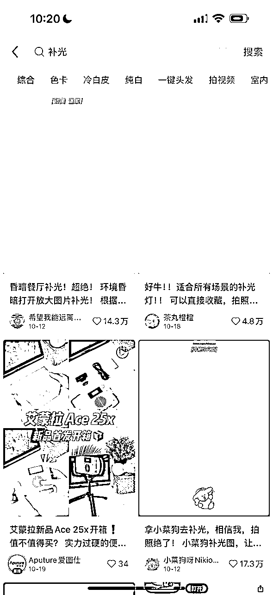
所以，那就做吧。于是在发布完当天的视频后我立刻又花了一个小时左右的时间去做了这款app。
这个产品在次日被审核通过上架，上架时我刚刚舟车劳顿了一天从马来西亚迁移到印尼的一个偏远海岛。但是一上架我还是立刻就闲不住，赶紧在即刻、朋友圈、微博、小红书等平台发布了。对很多人来说，发布一件投入精力很少，并且很可能还有很多bug、不完美的产品事件有耻感的事。但我早就破除了这个心魔，有一句话最近被我说得很烂了，那就是如果你发布的产品不让你感到尴尬的话，那说明你发布得太晚了。
所以做完了，发布完了就成了吗？当然不是，你还是需要一些对平台的感觉和等待一点点的运气降临。
因为这款产品的需求本身就是因小红书而起，而且产品受众本身99%以上都是女生，所以我认为小红书确实就是这款产品的发布渠道了。所以我在小红书做了两次的发布尝试。
这两篇笔记放到一起，如果遮住数据，你有能力立刻判断哪一个会变现更好吗？反正我不行。
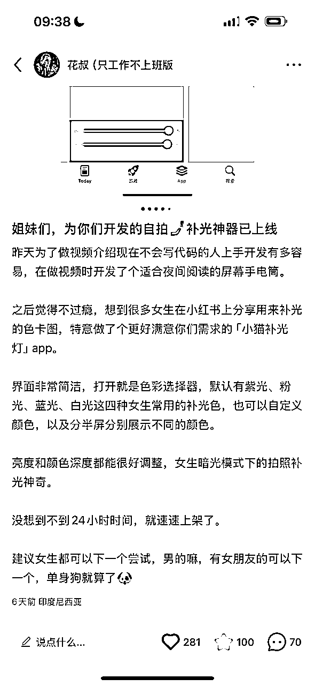
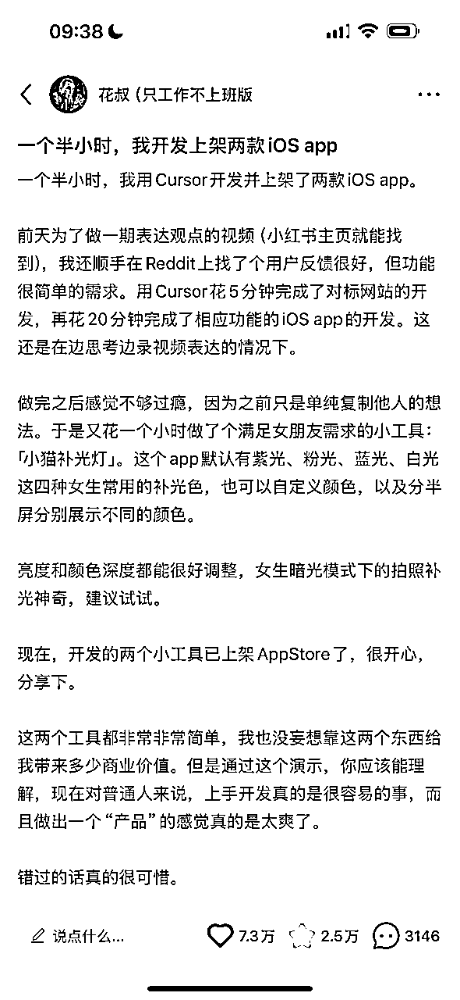
第一次是更偏讨好型的，直接面向「姐妹们」说话，是我预期数据更好且能带来app下载的内容。但实际的笔记效果很一般，现在2万的阅读大概有一半还是因为后一篇笔记火了之后被带起来的。
第二次的爆款你可以认为完全超出我预期了，你可以从笔记的语言看出，我这篇笔记预设的受众是对AI编程感兴趣的群体，因为我最近一直在做Cursor的长视频内容和付费星球，所以是希望通过这篇笔记为我获取一定的Cursor AI编程方向的粉丝和订阅群体的。
其实第二条是经过两天的酝酿才真正起飞的。而且前两天的节奏逻辑完全不同，用三个关键词概括的话分别是：争议、性别议题、meme。
笔记在第一天是真的符合我预期的吸引到了他的目标用户，男性程序员和开发者。他们对我这篇笔记的主要观点如下：
要么在否定这个app存在的价值，认为凭什么这么简单的app就能过审上线；要么在质疑我在笔记中描述的开发时间，我也能理解这对不会用AI编程的工程师来说太不可思议了。
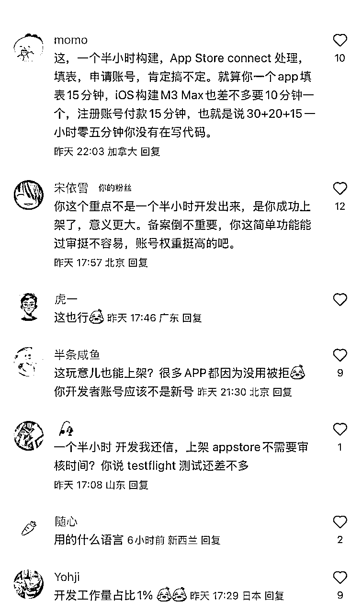
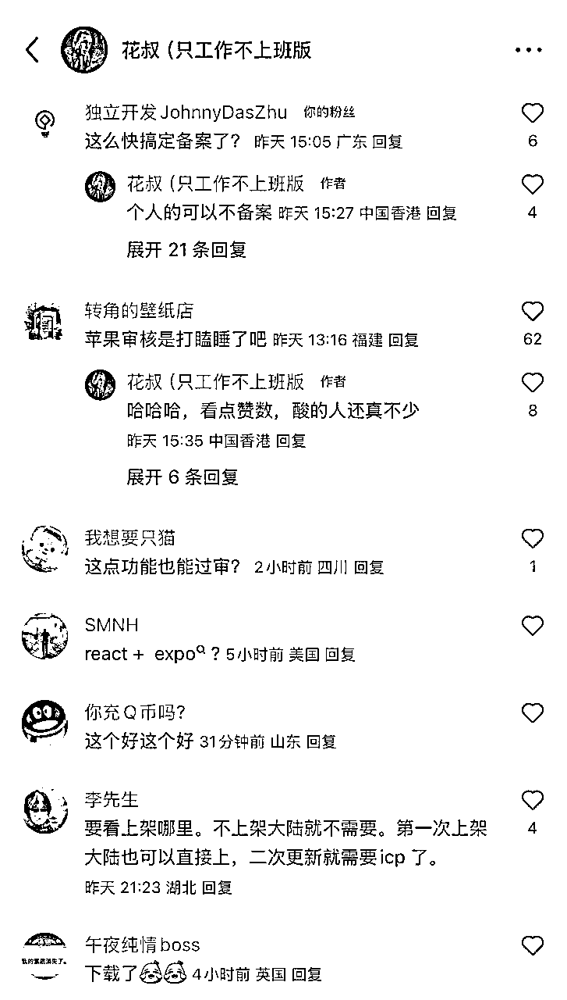
整体酸臭气息难以掩盖。但是我完全想要删掉这些评论或者视图去在他们面前辩解自己，不值得，没必要，以及有争议这事真挺好的。因为他们带来了小红书最重视的互动数据之一：评论（后面我在谈小红书想要什么的时候会深入谈谈我对这部分的理解）。
笔记的高互动率表现，尤其是高评论率让小红书在第二天为我的笔记提供了更多的分发，这让我的笔记有机会触及我产品的目标受众——爱美爱自拍的女生。
到了第二天，当我的目标受众看到这条笔记，并且看到我在评论区受到的争议，这个产品所满足的需求被质疑时，评论区凤向立刻转向。那些酸臭气息立刻被压制，并且很多女生更愿意在评论区表达这个产品确实是他们所需要的。
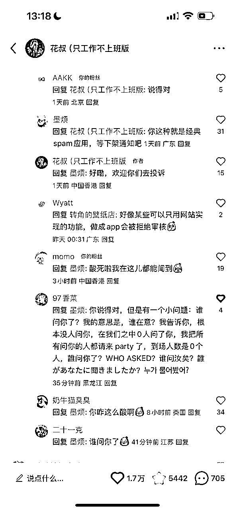
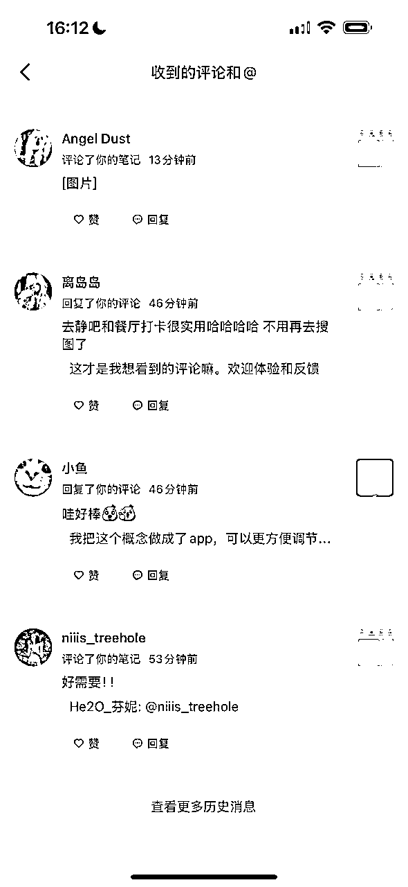
这个转向带来的高互动继续为笔记的引爆埋下燃料，但…还不够。
笔记真正的转折点在评论区有第一个、第二个、第三个用户喊出我的名字之后。因为AppStore会显示个人开发者的全名，所以用户确实是能看到我的名字的。而当他们喊了这个名字之后，两件有趣的事情发生了：
1、我不再是个独立开发者，我不再是个小红书博主，我被实实在在地人格化，拉近了和“姐妹们”的距离了；
2、这种meme元素让这条笔记本身有了更强烈的标签，形成了一个更有趣的社区氛围，很多人会因为这个氛围而在评论区 @ 自己的朋友或者将笔记转发给自己的朋友（而分享，是小红书最最喜欢的一类数据了）。
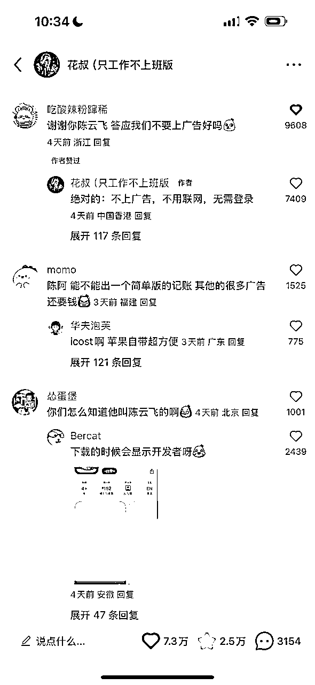
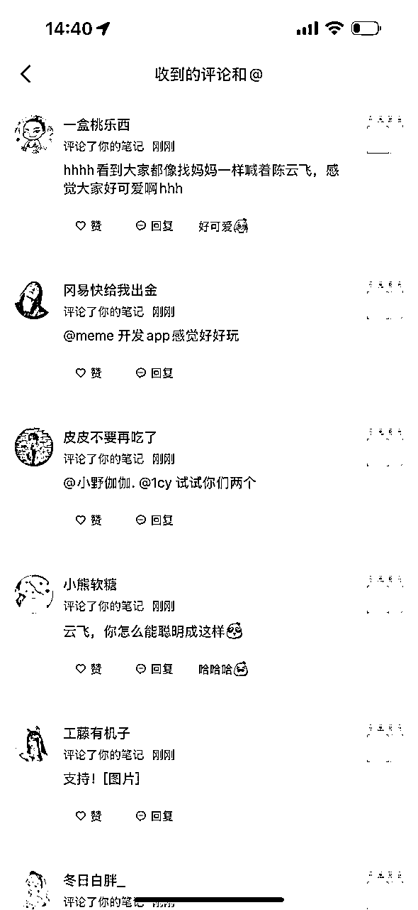
至此，经历了这三个步骤，笔记就完全起飞了。
面对这么个爆款，我后面大概做了这三件事让它延续：
1、我在评论区作为一个更真实的人，以及造了个和”姐妹们“站在一起的形象；
2、拼命关注这个产品的问题和用户需求，在笔记爆火的两天了连夜改了三个版本；
3、苟住，不修改笔记，不发新笔记，以免影响小红书的分发策略。
前面介绍完这篇笔记能成为爆款的逻辑，接下来我来简单总结下我理解的小红书想要什么。因为我此前在大厂工作时，也曾做过千万级日活产品的运营工作，在运营上花过上亿。所以大概对这类产品的运营和算法逻辑有一些理解。
很多人在做自媒体时，第一直觉都是去思考自己想要什么，这很合理，但是你有没有想过你也该思考下你所经营的平台他们想要什么？你给了他们想要的东西，他们自然也会能为你促成更好的结果。
比如说为什么这两年做YouTube shorts是个机会？因为YouTube想要对抗Tiktok，所以自然会更创作者提供更多的激励，以及在消费端更多做shorts的流量倾向，看到这个逻辑之后你大致就能对一个平台形成基本的认识。
而回到小红书呢？他们想要更多的日活，想建设更活跃的社区。而且看过一些运营书籍你大概都能了解一些基础的逻辑就是当一个用户在社交平台关注更多人，或者做出了评论等深度动作后，他的活跃时长和留存就会变得更好。所以小红书喜欢： 1、能激励用户分享，帮助他们拉活的笔记，这是比app内任何别的活跃行为都重要的；
2、能让用户产生评论或关注行为的笔记，这带来了更好的留存和停留时长。
至于其他互动数据，什么封标点击率、点赞、收藏，你可以认为也重要，但这通常是在深度数据不足的时候，小红书判断你笔记质量的基础指标，简单的点赞和收藏很难让一篇笔记真正引爆。
最后再让我总结下，我从这次经历中看到了什么：
1、小红书的流量质量很高，118万阅读，7.3万点赞，3.1万App下载，40%～50%的点赞下载率，这是非常高的水平了。如果你的产品是女性向的，绝对不要错过在小红书进行发布和经营的机会。
2、爆款有很大的运气成分，我能理解它引爆的原因，但没法复制。不过当我们理解背后的逻辑之后，我们可以把自己丢到更有机会被运气青睐的环境中。
3、先完成，再完美，赶紧发布让自己感到尴尬的产品。我享受的所有红利得益于我自己这条行事理念。
4、现在以Cursor为代表的AI编程现在已经到了个革命性的GPT4时刻：1）它能让普通人具备产品开发的能力，能用“产品”的方式抓住平时看到但是抓不到的机会；2）它极大的效率提升，能让我不停发布，快速试错，而当你有更多试错和复盘的机会，就等于有了加倍速的经验积累的迭代的机会。
在我最近一周孜孜不倦地Build in Public，不断分享自己成绩的情况下，已经出现了不少抄袭者，但是他们在小红书上和AppStore的表现都很拉垮，而我自己，也在上周日为小猫迭代出了新版本「小猫补光灯Pro」，而昨晚（11月12日）新发的一条笔记则在10几个小时内又突破10万阅读和1万点赞，继续引爆了。有心的朋友可以分析下为什么，以及我要出了一个Pro版本，而不是在原版上迭代优化的动机😉
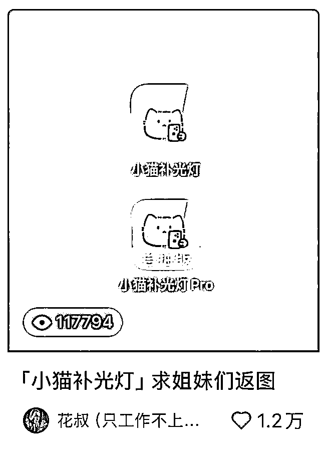